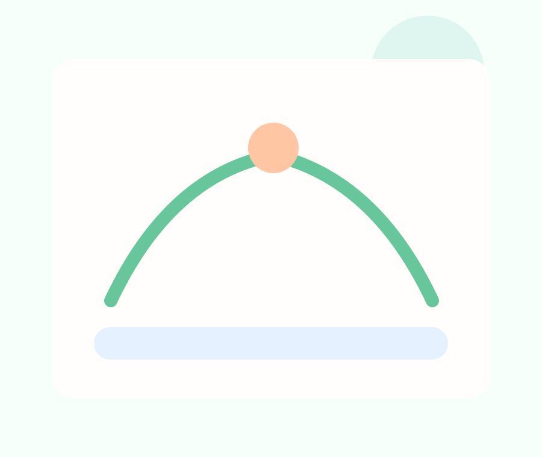

Leistung, Training, Körper und Motivation aus einer neuen Perspektive verstehen.
Dieser Projektkurs schaut auf Sport nicht nur als Bewegung, sondern als spannendes Zusammenspiel von Training, Gesundheit, Körperwissen und Teamdynamik. Ihr untersucht, was Leistung beeinflusst und wie sportliche Entwicklung bewusst gestaltet werden kann.
Im Projektkurs Sport geht es um deutlich mehr als nur Mitmachen. Ihr analysiert Trainingsformen, testet eigene Konzepte und beschäftigt euch mit Themen wie Regeneration, Ernährung, Motivation, Fairness, Verletzungsprävention und mentaler Stärke. Dabei verbindet der Kurs praktische Erfahrungen mit naturwissenschaftlichen und gesellschaftlichen Fragen: Was macht gutes Training aus? Wie reagiert der Körper auf Belastung? Welche Rolle spielen Druck, Wettbewerb und Teamgeist?
Der Kurs passt zu allen, die Sport nicht nur ausüben, sondern genauer verstehen wollen. Denkbar sind eigene Trainingspläne, Analysen, Challenges, Turnierformate oder Präsentationen, die zeigen, wie vielfältig Sport in der Q1 gedacht werden kann.
